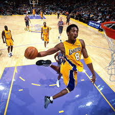
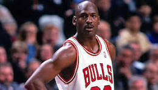

The basket ballers who have proven to the the best in the world
Kobe Brayant is known to be the greatest basketballer of all time because of his passion and
work ethic together with his talent on the court.He is so called pronounced as the GOAT, meaning
Greates of all the time but unfortunately he died in a helicopter crrash but he was the Goat of
Basketball

The second best NBA player is known as Michael jordan and most of the people wont be sincere and rather
say Lebron James but In my my opinion I preffer Michael Jordan. The reeason as to why I believe michael Jordan is the best
is because he has won six NBA championships and also his skills in the court in the court are unbeleivable.
Plus Michael Jordan is more experienced than Lebron James.So I would rather put him second but not Lebron James
